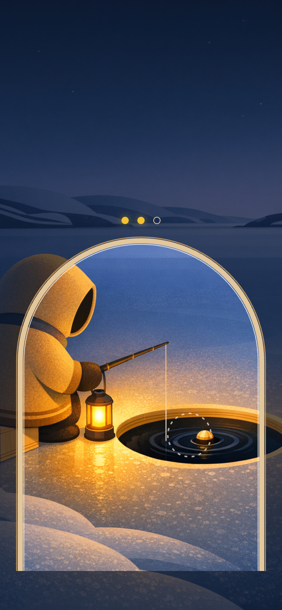
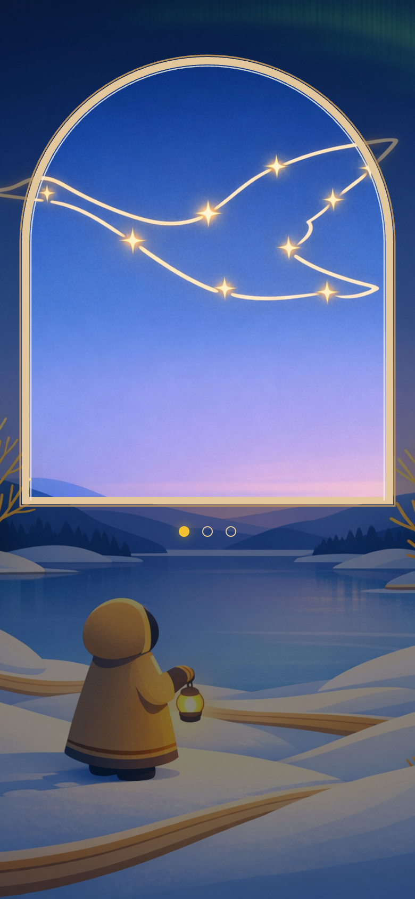
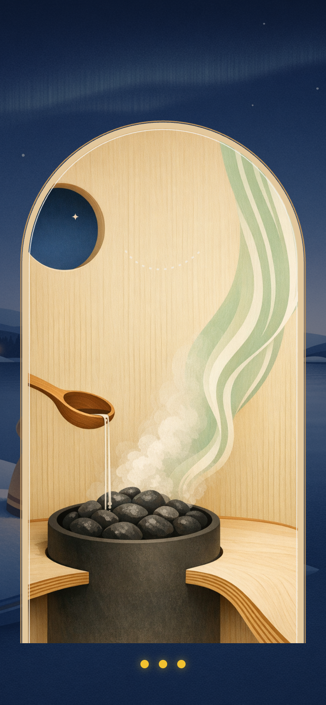

Minigames
The Opening: tasks grow out of the world

Bite, the core. An arch with a birch-ply frame opens around the stage; the world stays visible under a light scrim. Progress is three suns.

Joutsen, a sky task. The swan drawn as one continuous curve through the stars: the free wave as a mechanic.

Löyly, calm. The Opening grows from the sauna door. Steam rises as veneer lines in ceiling green.
Sprite pipeline, proven (flat matte, transparent, neutral light)


The Keeper. Child-sized, dome hood, bell cloak in undyed birch-ply wool, a laminated hem band, a hand lantern. No scarf, no staff, no point, no face. Props share the ply-edge rule; light is added in code.